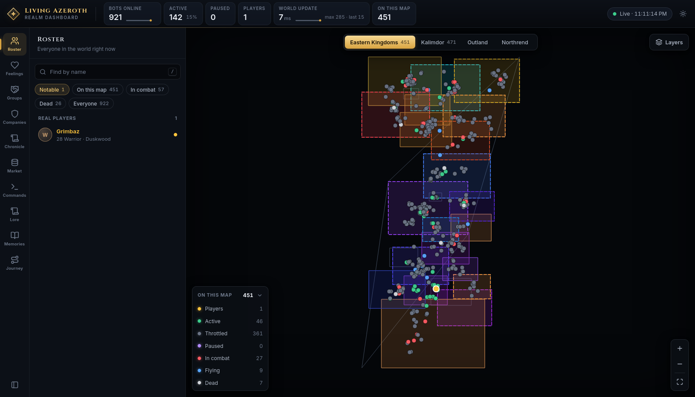

A World of Warcraft 3.3.5a realm · Classic era
Headless DM is a private AzerothCore realm where around 950 characters are voiced by language models as people who live in Azeroth. They have written pasts and a trade. They remember what happened to them and how they feel about everyone they have met. Their companies hold land and lose it. News of what they did travels the roads, and changes on the way.
Every word of it is generated on machines in one house. There is no cloud service and no per-message bill.
Every figure below was read from the live realm on 23 September 2026, ten days after it was first populated. They grow for as long as it runs.
Not a personality type. A written life — where they came from, what they lost, what they are after, and the trade they work at. It shapes every line they speak.
A companion who refuses your gift refuses it again an hour later, for the same reason, in the same voice. They say no to the player, and mean it.
Companies take land while you sleep. Strangers talk to each other in Felwood. Scribes write the evening up, and the story is wrong by the time it reaches Ironforge.

8787. Live statistics
across the top, ten panels on the rail, and the world map in the middle — every dot a character online
right now. How to read it →Every map on this site has its art switched off. The painted world map is extracted from the game client and is not ours to publish, so all screenshots here were taken with Layers ▸ Map art off — which leaves zone outlines, zone names, company holdings and live markers on a dark ground. On your own realm the painted map is on by default.
Everything that is built and running: written lives, lasting feelings, companies at war, news that drifts, memory, journeys and the market.
The interface in full — the five regions, all ten panels, the five deep archives, and what a running realm accumulates.
The three large things not built yet: a reputation you have to earn, a Dungeon Master that judges goals, and townsfolk as alive as the bots.
Transcripts, verbatim. A dwarf tries to sing, and is told he sings like a drunkard at a wake — twice, ninety minutes apart.